Speak or draft, typed directly at your cursor.
A lightweight desktop app for macOS and Windows. Press your shortcut, talk or draft, and Chatelle types into the active window one keystroke at a time.
Looking for Windows instead?

ChatelleA lightweight desktop app for macOS and Windows. Press your shortcut, talk or draft, and Chatelle types into the active window one keystroke at a time.